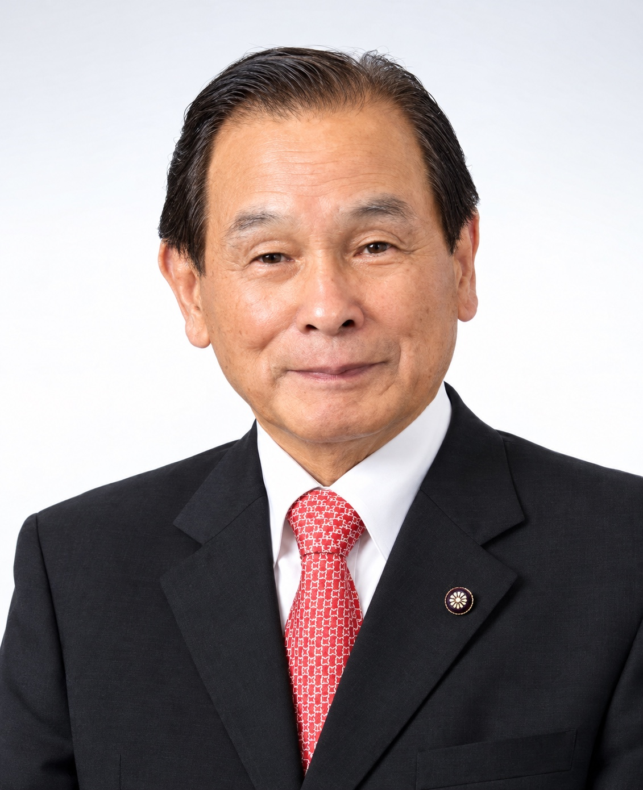

第4回定例会9月17日録画を見る ↗
- 放課後児童クラブの現状について
- 小中学校に於ける防災教育や避難訓練の実施について
こころとこころのふれあうまちづくり

平成3年（1991年）の初当選から9期。議長、文教福祉常任委員長を務め、一般質問では教育、福祉、地域交通、まちづくりを繰り返し取り上げてきました。
経歴と議会での役職
| 氏名 | 田中 允（たなか まこと） |
|---|---|
| 会派 | 無所属 |
| 当選 | 9回（1991年初当選） |
| 議長 | 平成16年〜平成17年 |
| 文教福祉常任委員会 委員長 | 平成17年〜平成18年 |
| 住所 | 〒818-0031 福岡県筑紫野市隈249番地 |
役職は平成16年以降の本会議会議録の記載から集計しています。
名刺・後援会資料より
初心を忘れず、皆様のてあしとなって一生懸命、汗を流して頑張ります。
福祉の田中、教育の田中、ボランティアの田中。議場での自己紹介のとおり、子どもと高齢者の暮らしに関わる課題を中心に、毎議会の一般質問で市の考えをただしてきました。「田中まこと」だからできる事、「田中まこと」でなければできない事がある。その思いで市政に向き合っています。
一般質問の題目と議会での役職（平成16年〜）。各会期の右端から、録画・通告書・会議録を開けます。最終更新：2026-10-10
題目は会議録の発言から抜粋
題目は会議録の発言から抜粋
文教福祉常任委員会 委員長
議案の提出：発議第6号冷水有料道路の通行料金の見直しに関する意見書の提出、発議第5号筑紫野市議会議員の報酬条例の一部を改正する条例の制定、発議第3号「（仮称）産業廃棄物処理場問題の抜本的解決を求める促進期成会」結成の決議、発議第1号筑紫野市議会委員会条例の一部を改正する条例の制定、発議第2号筑紫野市議会議員の報酬条例の一部を改正する条例の制定
題目は会議録の発言から抜粋
文教福祉常任委員会 委員長・議長
議案の提出：発議第2号地方六団体改革案の早期実現に関する意見書、発議第3号地方議会制度の充実強化に関する意見書
一般質問の記録はありません。
議長
一般質問の記録はありません。
この期間の会議録はインターネットでは公開されていません。筑紫野市議会事務局（議会図書室）で閲覧できます。
出典：令和4年以降は筑紫野市議会インターネット議会中継、平成26年〜令和3年の一般質問の題目は筑紫野市の一般質問通告書、それ以外は筑紫野市議会 会議録検索システムの本会議会議録です。
田中議員が出席した委員会の会議録（新しい順）。「発言あり」は会議録に発言が記録されているものです。